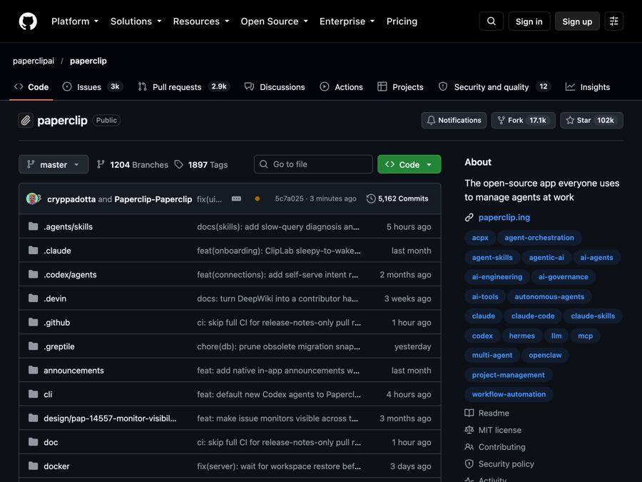

Paperclip: run a team of AI agents like a real company
A free, self-hosted app that organizes AI agents like a company, with goals, an org chart, budgets and one dashboard.

The problem it solves
One AI agent is easy to manage. Ten is chaos. Many people now run several AI helpers at once: one writing code, one doing research, one drafting posts. Soon there are twenty windows open, and nobody knows who is doing what.
It gets worse. Restart your computer and the work is lost. You keep re-explaining the goal. And an agent stuck in a loop can burn through hundreds of dollars of AI usage before you notice.
What it is
Paperclip is a free, open-source app for managing teams of AI agents. Its tagline sums it up: if an AI agent is an employee, Paperclip is the company.
It looks like a task manager. Under the hood, it has org charts, budgets, approvals and goals. You bring your own agents, like Claude Code, Codex, Cursor, Gemini CLI or OpenClaw. Then you give them roles, assign goals, and track their work and costs from one dashboard.
It is "self-hosted," which means it runs on your own computer or server. You use it through your web browser. No Paperclip account is needed.
Who it's for
- Founders and solo business owners who use AI agents to run parts of a business.
- Managers who want roles, permissions and approvals for AI workers.
- People running many AI coding helpers at once who keep losing track.
- Teams with recurring jobs, like customer support replies, social posts or reports.
- Anyone worried about AI costs who wants budgets and alerts.
It works for coding, and the README says it also fits research, operations and content work.
What you can do with it
- Set business goals. Link tasks and projects to company goals, so agents know the "why."
- Build an org chart. Agents get a boss, a title and a job description. People and agents can share one chart.
- Assign tasks. Give work to agents or people, with conversations, files and history attached.
- Control costs. Set budgets by company, agent or project. Get alerts and auto-pause at limits.
- Require approvals. Add review steps, approve new "hires," and pause or stop work anytime.
- Schedule routines. Recurring work runs on a schedule, each with an owner and a history.
- Keep work after restarts. Tasks and sessions are saved, so nothing vanishes on reboot.
- Manage from your phone. The README says it is mobile ready.
- Connect apps like GitHub, Notion and Railway, with "Allowed," "Ask first" or "Off" settings.
- Install ready-made teams with roles, skills and routines.
- Run several companies from one setup, each kept separate.
How to start, step by step
What you need first: Node.js 24.11 or newer (a free tool many apps need). You will also need at least one AI agent and an account with its AI provider.
- Install Node.js from nodejs.org if you do not have it.
- Open Terminal (Mac or Linux) or a command window (Windows) and run:
npx paperclipai@latest onboard --yes
- Follow the guided setup. Your settings and data are saved on your computer.
- Add your first agent and give it a goal. The project also offers a guided "five-minute path" in its docs to set up your first agent.
Prefer letting AI do it? The README says you can share its installation guide with your agent and ask it to install Paperclip.
Good to know
- Paperclip is free, AI is not. Your agents still use paid AI services, which is why the budget tools matter.
- Budgets are not instant. The README says usage reports and work already running can delay a stop.
- Telemetry is on by default. It collects anonymous usage data, but not personal info, prompts, file paths or secrets. You can turn it off with a setting like
DO_NOT_TRACK=1. - Local by default. The quick setup starts in a mode meant for your own machine. For remote access, the README points to a private network or Docker setup.
- Cloud version coming. There is a waitlist for a hosted "Paperclip Cloud." The README does not list prices.
- Some features are experimental, like Agent Chat and chat or email connectors.
- License: MIT. Free to use, change and even use in business. Just keep the copyright notice.
The bottom line
Paperclip gives your AI agents what a real team needs: goals, a boss, a budget and a place to track work. If you juggle several AI helpers, it brings order to the chaos. One command gets it running in your browser.
Get it: github.com/paperclipai/paperclip
📲 Watch the 30-second video on Instagram
Keep reading

DBX: one small free app to open and edit 100+ kinds of databases
DBX is a free, tiny app that lets you browse, search and edit over 100 kinds of databases, with an AI helper that writes queries for you.

PureMac: free up space on your Mac without a subscription
PureMac is a free, open-source Mac cleaner that removes junk, fully uninstalls apps, and never tracks you or tries to scare you.

Strata: run a big, private AI chatbot on your own gaming PC
A free one-click installer that runs a large Qwen AI model on a normal gaming PC, so your chats never leave your computer.